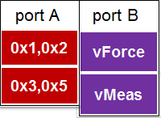
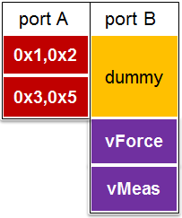

Multiport programming with SmartRDI
SmartRDI supports multi-port programming. With a multiport setup, you can take advantage of the tester's per-pin architecture.
To use SmartRDI for multiport tests, program the code like below.
rdi.port("portA").class().pin().para().execute();port() specifies the port to set up, class()
specifies the test type, pin() specifies the pin(s) or pin group to
set up, and para() represents the functions to set up the test
parameters.
You can combine multiple tests onto different ports. The following code and figure illustrate how to do it without portSync:
RDI_BEGIN( );
rdi.port("A").protocol().pname("i2c").write(0x1,0x2).execute();
rdi.port("A").protocol().pname("i2c").write(0x3,0x5).execute();
rdi.port("B").dc().pin("IN").vForce(3).execute();
rdi.port("B").dc().pin("OT").vMeas().execute();
RDI_END( );
To synchronize the execution on different ports, you can use the function portSync().
RDI_BEGIN( );
rdi.port("A").protocol().pname(i2c).write(0x1,0x2).execute();
rdi.port("A").protocol().pname(i2c).write(0x3,0x5).execute();
rdi.portSync();
rdi.port("B").dc().pin("IN").vForce(3).execute();
rdi.port("B").dc().pin("OT").vMeas().execute();
RDI_END( );The following figure shows how to organize the multiport burst pattern with portSync().

In multiport bursts, a synchronization group (sequencing group) always forces related ports to start at the same point in time. To achieve a proper synchronization, ports which are supposed to start their vectors synchronously must be put in one synchronization group.
Functional changes
- Introduced in SmartRDI 2.1.0